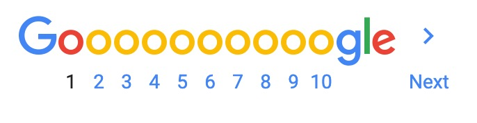

About 133,000,000 results (0.56 seconds)
victor-lf.github.io › google-search-results
build this webpage - GitHub Pages
build this webpage. https://benjdelt.github.io/google-results/. With zero coding experience, artist building 180 webpages in 180 days ...
christine-27.github.io › google-homepage
build this webpage - GitHub Pages
TO CREATE A WEBSITE WITH WORDPRESS (OR JOOMLA & DRUPAL), USE ONE CLICK INSTALLATION: 1. Log in to your hosting account. 2. Go to your ...
www.websitebuilderexpert.com › building-websites
How to Build a Website: the Step-by-Step Guide to Easy Setup ...
Mar 18, 2020 - Not sure how to build a website? It actually is not that hard. You don't have to be technical at all. With our handy guide, you can get started ...
www.squarespace.com
Squarespace: Build a Website – Website Builder
Squarespace is the all-in-one solution for anyone looking to create a beautiful website. Domains, eCommerce, hosting, galleries, analytics, and 24/7 support all ... Overview · Ecommerce Templates · Sell Products · Sell Services
websitesetup.org
How to Create a Website: Step-by-Step Guide for Beginners ...
Learn how to make a website and set it up. This site contains different tutorials on how to build a website using WordPress, Joomla, Drupal & HTML.
Related Searches
